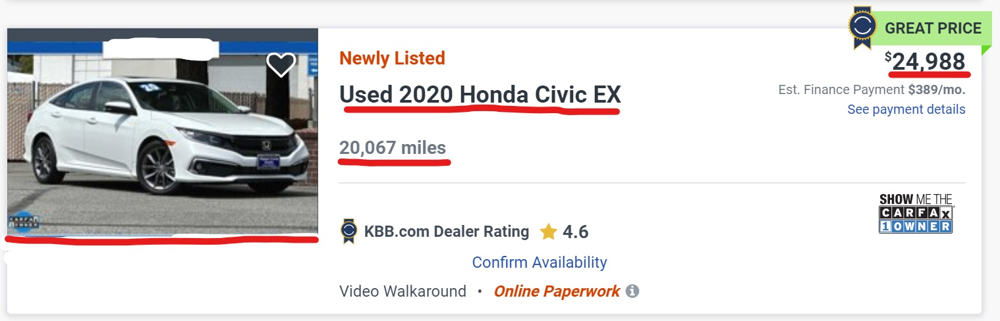
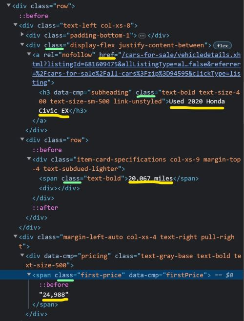
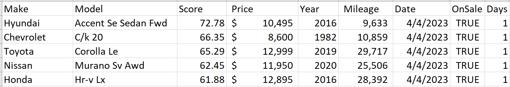

Driving by Data: My Journey to Finding the Perfect Car
An innovative web scraping program to generate personalized used car recommendations
"Information is a source of learning. But unless it is organized, processed, and available to the right people in a format for decision making, it is a burden, not a benefit.
- William Pollard
Inspiration
When I took a few days off from college for Thanksgiving in 2022, I finally found myself with some much needed free time. While I spent most of it with my family, I also wanted to embark on a personal project that would utilize the skills I had acquired that semester. With an upcoming internship at Ericsson in Dallas, Texas, I needed to buy my first car, but I knew little about the used car market. The deluge of confusing resources online left me feeling overwhelmed, so I decided to create a program to do the research for me.
Thus, Casper was born. It scours online used car retailers like AutoTrader, CarsDirect, CarGuru, Carvana, Lowbook, and KSL for used car sales data using Python’s Selenium package. While it currently only searches for cars in the Provo, Utah area, Casper scores each vehicle to generate a CSV report of the current market and records market changes since its inception in November 2022.
When Casper finds good deals, it alerts me so that I can look into the cars it found in more detail and decide if I want to make a purchase or move on. Casper has quickly grown to become one of my largest projects yet, and now has a variety of capabilities I’ve organized into different sections of this article. While the system isn’t perfect, it significantly reduced the amount of time I spent researching and made my final decision much more informed.
The name Casper is a nod to the Spanish word "raspar," which means "to scrape." Additionally, it pays homage to "Casper the Friendly Ghost," as when the program is running, it looks like a ghost is controlling your computer!
Web Scraping
My primary goal when I started this project was to develop my web scraping skills. Web scraping is a catch-all term that refers to extracting meaningful data from websites. By following a set of programmed instructions, a web scraping program can identify and extract data and store it in a database or export it to a spreadsheet. I decided to build Casper using the testing and automation package Selenium to do my “research” for me.
As I was residing in Provo, Utah at the time, my focus was on dealerships with the most extensive presence in that region. Although Casper can be reconfigured to search other zip codes and larger areas, the program can’t run in the background and gets slowed easily by long page loading times. I found it most useful to limit the search criteria as well. Fortunately, Casper permits users to input specific search parameters, including price ranges, mileage ranges, production years, city of sale and radius, and new or used cars only. With this input, Casper scours popular used car platforms and scrapes their relevant information such as production year, make, model, price, image, and listing link from the search results.
The program has an object-oriented code structure. I instantiate an object for each website in the main function. Since each website is unique and requires several distinct steps, it made more sense to create a separate class object for each one instead of abstracting them to a single object. The constructor opens the corresponding website via Selenium, and sets up the page by adding any necessary user filters not included in the URL. Finally, the constructor calls each of the finding methods, such as the method described below.
This function finds all of the prices visible on the current page. In this example, I’m searching by xpath, which means that Casper will search the HTML code structure until it finds a block that matches priceClass using the find_elements method of the Selenium driver object. The priceClass string variable tells Casper to look for a “div” element with a “data-qa” attribute that has a value equal to “price”. The for loop at the bottom then parses the corresponding list so that the string objects can eventually be cast to int objects.
def findPrices(self):
"""
Find the prices for each car
:param self
:return: prices (list): list of price strings
"""
# initialize a list of prices to return
prices = []
# define the X-Path to search the HTML code
priceClass = "//div[@data-qa='price']"
# get a list of price elements and save the parsed text content
priceElems = self.driver.find_elements(By.XPATH, priceClass)
# add the text from the elements to the list
for elem in priceElems:
prices.append(elem.text.replace(",", "").replace("$", "").split()[0])
# return the list of prices
return prices
After Casper scrapes the data from the search results, it creates a list of Car objects by matching each car with its relevant parameters. Each Car object is essentially a dictionary that also calculates the car's overall score and detects any scraping errors. Once all the Car objects have been created, Casper appends the cleaned results to a CSV file corresponding to the current website.
Since most searches yield multiple pages of only 20-50 sales each, Casper moves on to the next page after scraping the first page, resets the filters, and continues the process until it has found all the results. The complete process takes around 30 minutes to scrape an average of 500 listings between all six websites.
Image Compression
Collecting up to 500 images every day is a significant task, and it can quickly consume a computer’s available storage. To fix this problem, I needed to compress the images so that they take up less space and become more manageable. Although packages like OpenCV provide built-in image compression techniques, I opted to leverage a linear algebra technique I learned in one of my ACME

In essence, a method called Singular Value Decomposition allows you to split an image into its component parts, identify the most important ones, and remove the least important parts along with the data it took to store them. When you recombine these components, the resulting image looks similar if not indistinguishable to the human eye, but requires significantly less space to store.
Scoring Algorithm
The scoring function I wrote is fairly simple. With more data such as branded vs clean title, condition, color, and ratings, the algorithm would be much more effective, but for what I have to work with it performs well. There are eight inputs to the function: car mileage, price, year, brand, and weights for each of those four parameters.
The weights allow the user to tell Casper how important each of those parameters are to them. For example, if mileage were twice as important as anything else, the weights would be (2, 1, 1, 1) respectively. The weights are normalized, so the actual value doesn’t matter, only the relative value does. The function computes the sum of the ratios between the recorded values and the ideal maximum values, and then multiplies that value by each weight times one hundred. This returns a number between zero and one hundred. Here is the formula for one such calculation using mileage as an example.
$ \frac{2 \times milesInt - \text{int}(\text{self.miles})}{2 \times milesInt} \times \frac{p[\text{mileageWeight}]}{numParam} $
I made the output nonlinear by modifying the output slightly before returning it. This formula is designed to make the bad scores worse and the good scores better, so that it would be easier to find the cars that stand out.
$ \texttt{self.score = } score \cdot (score + 0.4) \cdot 100 $
Damage Detection
While the scoring algorithm worked consistently, it had a significant flaw that inhibited its practicality. The highest scoring cars were sometimes ranked well because they had visible and sometimes severe damage. While the damage is clear to the human eye, all the scoring function could see was a severely reduced offering price.
To address this issue, I developed a machine learning model capable of detecting damage in car images with an accuracy of over 99%. This feature was actually the final project for my Deep Learning class, and it turned out to be more challenging than I had initially anticipated. I believe it also deserves its own post, so you can find more information about it in my other blog post, “Detecting Vehicle Damage with Advanced Deep Learning Technology”
Price Prediction
In an effort to further enhance the accuracy of my score calculation, I created another machine learning model that predicts a car's price based on its features. By leveraging this approach as a factor in my scoring function, I could evaluate if a listing is worth considering by comparing its offering price to my model's predicted price.
Since I needed more data about each car to build a more accurate model, I started with a more comprehensive dataset I found online. With a little bit of data cleaning and feature engineering, I trained a neural network that relies on embedding the data for over 2000 epochs to achieve satisfactory performance. Although the model demonstrated impressive results on the downloaded data, I still need to adapt it to the limited data that Casper scrapes before it will be practical for this project.
Future Work
As you may have discerned from the multiple steps I have taken to improve the scoring function, further enhancements to its accuracy and usefulness of the car scoring algorithm remain the most important next steps. While the current version provides a helpful baseline for buyers, gathering more data about each car would enable even more precise scoring and more helpful recommendations. However, the task of gathering additional data is complicated by the online software that detects bots and thwarts Casper's attempts to view more detailed information on the listings. Bypassing this obstacle would allow me to obtain more comprehensive data and improve the scoring function.
In addition to improving the vehicle scoring algorithm, expanding Casper's capabilities to include market analytics would be an interesting and engaging challenge. With several months of data, Casper would be able to identify trends in the local used car market and provide even more helpful insights for buyers. For instance, it could pinpoint the best time of year to buy, how long specific cars tend to stay on the market, and how local market trends compare to national ones.
Finally, Casper will require continual updates to adapt to any design changes that occur on the constantly changing websites. This maintenance will ensure that Casper continues to function smoothly and provide accurate and up-to-date information for its users.
I hope you learned something from this project and the algorithms and techniques that I applied to handle the challenges and develop the features that the project parameters required. If you’d like to view the code repository, you can visit my GitHub here. I’d appreciate any contributions or feedback you have to offer!